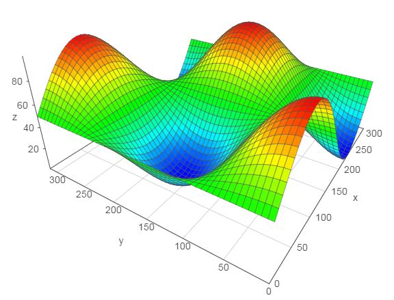

Vis.js -- 另一個強大的 JavaScript 繪圖函式庫
雖然前述的 d3.js 與 c3.js 可以做到繪圖功能，但是這兩個函式庫強調的是互動性介面，而不是繪圖功能的部份。
於是、我找到了 vis.js 這個專注於繪圖的函式庫，這個函式庫雖然再互動性上表現得沒有 c3 那麼好，但是在繪圖功能上卻非常的完整，該有的圖型幾乎都有，特別是有關「 3D 地形圖」、「網路線圖」和的部份，是 C3 所不具備的功能，因此我們拿 vis.js 來繪製這兩類的圖形。
您可以點選下列連結，看看 vis.js 的眾多範例，相信您會對這個繪圖框架感到印象深刻的。
舉例而言、以下網頁是用來繪製 3D 地形圖的完整原始碼，
網址：http://visjs.org/examples/graph3d/example01_basis.html

圖、用 Vis.js 繪製 3D 圖形
以下是上述範例的完整 HTML 檔案。
<!DOCTYPE HTML PUBLIC "-//W3C//DTD HTML 4.01 Transitional//EN" "http://www.w3.org/TR/html4/loose.dtd">
<html>
<head>
<title>Graph 3D demo</title>
<style>
body {font: 10pt arial;}
</style>
<script type="text/javascript" src="../../dist/vis.js"></script>
<script type="text/javascript">
var data = null;
var graph = null;
function custom(x, y) {
return (Math.sin(x/50) * Math.cos(y/50) * 50 + 50);
}
// Called when the Visualization API is loaded.
function drawVisualization() {
// Create and populate a data table.
data = new vis.DataSet();
// create some nice looking data with sin/cos
var counter = 0;
var steps = 50; // number of datapoints will be steps*steps
var axisMax = 314;
var axisStep = axisMax / steps;
for (var x = 0; x < axisMax; x+=axisStep) {
for (var y = 0; y < axisMax; y+=axisStep) {
var value = custom(x,y);
data.add({id:counter++,x:x,y:y,z:value,style:value});
}
}
// specify options
var options = {
width: '600px',
height: '600px',
style: 'surface',
showPerspective: true,
showGrid: true,
showShadow: false,
keepAspectRatio: true,
verticalRatio: 0.5
};
// Instantiate our graph object.
var container = document.getElementById('mygraph');
graph = new vis.Graph3d(container, data, options);
}
</script>
</head>
<body onload="drawVisualization();">
<div id="mygraph"></div>
<div id="info"></div>
</body>
</html>而在網路圖方面，您甚至可以指定每個節點應該呈現的圖片，以下是一個繪製電腦網路圖的範例。

圖、用 vis.js 繪製電腦網路圖
以下是上述範例的完整 HTML 檔案。
<!doctype html>
<html>
<head>
<title>Network | Images</title>
<style type="text/css">
body {
font: 10pt arial;
}
#mynetwork {
width: 600px;
height: 600px;
border: 1px solid lightgray;
}
</style>
<script type="text/javascript" src="../../dist/vis.js"></script>
<link href="../../dist/vis.css" rel="stylesheet" type="text/css" />
<script type="text/javascript">
var nodes = null;
var edges = null;
var network = null;
var DIR = 'img/refresh-cl/';
var LENGTH_MAIN = 150;
var LENGTH_SUB = 50;
// Called when the Visualization API is loaded.
function draw() {
// Create a data table with nodes.
nodes = [];
// Create a data table with links.
edges = [];
nodes.push({id: 1, label: 'Main', image: DIR + 'Network-Pipe-icon.png', shape: 'image'});
nodes.push({id: 2, label: 'Office', image: DIR + 'Network-Pipe-icon.png', shape: 'image'});
nodes.push({id: 3, label: 'Wireless', image: DIR + 'Network-Pipe-icon.png', shape: 'image'});
edges.push({from: 1, to: 2, length: LENGTH_MAIN});
edges.push({from: 1, to: 3, length: LENGTH_MAIN});
for (var i = 4; i <= 7; i++) {
nodes.push({id: i, label: 'Computer', image: DIR + 'Hardware-My-Computer-3-icon.png', shape: 'image'});
edges.push({from: 2, to: i, length: LENGTH_SUB});
}
nodes.push({id: 101, label: 'Printer', image: DIR + 'Hardware-Printer-Blue-icon.png', shape: 'image'});
edges.push({from: 2, to: 101, length: LENGTH_SUB});
nodes.push({id: 102, label: 'Laptop', image: DIR + 'Hardware-Laptop-1-icon.png', shape: 'image'});
edges.push({from: 3, to: 102, length: LENGTH_SUB});
nodes.push({id: 103, label: 'network drive', image: DIR + 'Network-Drive-icon.png', shape: 'image'});
edges.push({from: 1, to: 103, length: LENGTH_SUB});
nodes.push({id: 104, label: 'Internet', image: DIR + 'System-Firewall-2-icon.png', shape: 'image'});
edges.push({from: 1, to: 104, length: LENGTH_SUB});
for (var i = 200; i <= 201; i++ ) {
nodes.push({id: i, label: 'Smartphone', image: DIR + 'Hardware-My-PDA-02-icon.png', shape: 'image'});
edges.push({from: 3, to: i, length: LENGTH_SUB});
}
// create a network
var container = document.getElementById('mynetwork');
var data = {
nodes: nodes,
edges: edges
};
var options = {
stabilize: false // stabilize positions before displaying
};
network = new vis.Network(container, data, options);
}
</script>
</head>
<body onload="draw()">
<div id="mynetwork"></div>
</body>
</html>透過這兩個範例，相信您應該可以感覺到 vis.js 的誠意，這真的是一個相當棒的繪圖函式庫啊！